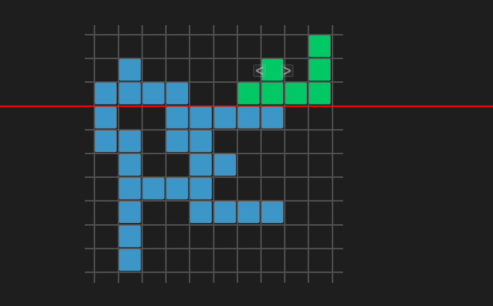
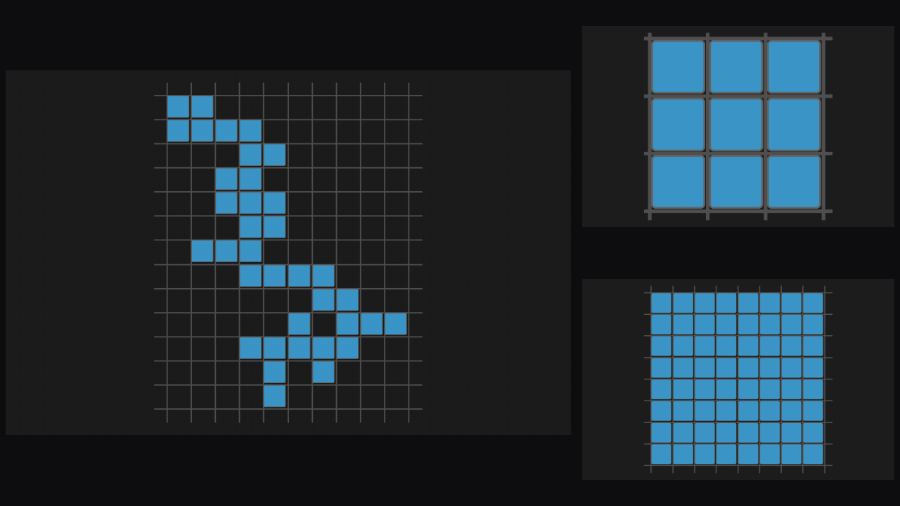
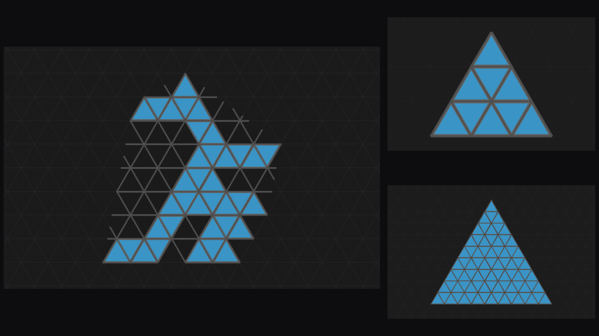
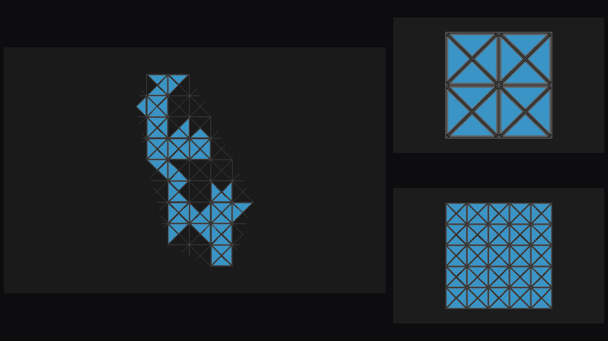
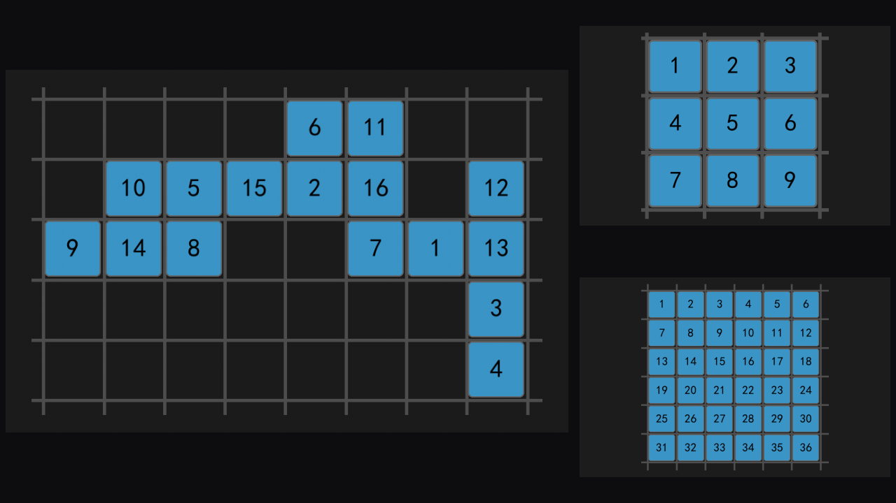

規則 30 秒就學得會。
要把這些方塊拼回實心長方形，可能需要 幾萬步。
永久免費・程式碼開源・沒有廣告・不用安裝 —— 瀏覽器裡點開就能玩
網頁版是 試玩：能玩、能教學、能計時、能存檔。求解器、四種形態、新手教程、視覺增強、競速統計這些完整功能，在 Windows / Python 版裡。

還原條件：讓所有方塊構成一個完整的實心長方形 —— 位置在哪裡不重要、橫著豎著都算，重點是沒有缺口、沒有空洞（不是要你回到初始版面）。
網站背景正在自動播放示範。想看詳細規則、術語、各種模式和快捷鍵，到玩法詳解。
矩形、三角、米字、數字 —— 同一套規則，四種完全不同的手感。每種的連通方式與邊界都不一樣。
從 3×3 的小盤到十幾階的大盤；等級（step）決定移動的距離單位 —— 每次只能平移 step 的整數倍。等級越高，方塊就會被數學規律切成越多張「互換網」，跨網的兩塊永遠換不了。
每一局都是隨機打亂的。同一個尺寸同一個等級，也可以玩上百次不重樣，而且沒有「背答案」這回事。
不看任何說明也能上手：內建引導關卡，從最簡單的局面開始，一步步教你怎麼看縫、怎麼帶動方塊。
徹底卡住時，讓程式幫你解：可以一步一步播放它的走法，也能只看它給出的思路。看 AI 犯難也挺有意思。
著色器按移動不變量替方塊描邊上色 —— 同色就代表「這幾塊永遠可以互換」；連鎖器在你指到某個空位時，把全場補得進那裡的位置一起提亮。哪些事辦得到、哪些辦不到，看一眼就知道。
這套規則背後連著群論、置換、晶格自同構這些東西。有興趣可以看相關數學問題。
計時、DNF、Ao5 / Ao12 去尾平均 —— 和魔方速擰一樣的統計口徑，適合自己刷記錄。
程式碼公開在 GitHub（AGPL-3.0）。永遠免費，永遠沒有廣告，也不會有一天突然收費。




四種形態 + 內建求解器 + 新手教程 + 視覺增強 + 競速統計 + 存檔匯出 —— 想認真玩就下載這個。
解壓後雙擊 GatenneaSlider.exe 即可，不需要安裝 Python。首次啟動約 5 秒（殺毒軟體在掃），之後約 2 秒。
⬇ 下載 ZIP（約 31 MB）其他選擇：Python 原始碼（裝好 pygame 直接跑）・離線網頁版（整站打包，斷網也能玩）・查表求解器資料庫（可選；沒裝只會讓「查表求解器」不可用，其它功能不受影響）。
版本號長得像 v197-20261006：197 是 Git 提交數，20261006 是打包日期，一眼就能比出新舊。上面的下載連結固定指向最新版，不用到處找。
程式沒有數位簽章，Windows SmartScreen 或 360 可能跳出攔截提示，選「仍要執行」即可。Release 頁面附了 SHA256 校驗值，下載後可用 certutil -hashfile 檔名.zip SHA256 核對。
目前成績只保存在你自己的電腦或瀏覽器裡。貓九正在架設後端，做完之後你可以在網站上提交成績，跟其他人比誰解得更快、誰的 Ao5 更低。
在那之前，先在完整版裡自己刷記錄吧 —— 計時口徑跟魔方速擰是一套（DNF / Ao5 / Ao12）。有想法或建議也歡迎告訴貓九。
完整的版本歷史在動態・更新日誌，裡面同時記錄網路版與 Python 版的改動。
2025 年，貓九發布了遊戲構思，用正方體磁鐵（巴克球）在實體桌面上演示：[貓九]我用磁鐵設計了一種高難度謎題：貓九滑塊。
下方的空格是自動補位的：只要把截圖放進網站的 images/ 資料夾、檔名改成方框裡顯示的那個名字，重新整理頁面就會自動出現，不用改網頁。
建議挑：三種進階形態各一張、著色器與連鎖器各一張、成績面板一張、手機操作一張。
以上截圖來自 Python 版 / 網頁版，實際介面可能隨版本略有不同。
這個遊戲完全免費、沒有廣告、程式碼開源。如果你玩得開心，可以在愛發電上支持一下 —— 它會變成貓九做下一關、下一個形態、下一個後端的時間。
去愛發電支持完全自願，不影響任何功能；不支持也一樣歡迎常來玩，把遊戲分享給朋友就是很大的幫助。
规则 30 秒就学得会。
要把这些方块拼回实心长方形，可能需要 几万步。
永久免费・代码开源・没有广告・不用安装 —— 浏览器里点开就能玩
网页版是 试玩：能玩、能教学、能计时、能存档。求解器、四种形态、新手教程、视觉增强、竞速统计这些完整功能，在 Windows / Python 版里。
还原条件：让所有方块构成一个完整的实心长方形 —— 位置在哪里不重要、横着竖着都算，重点是没有缺口、没有空洞（不是要你回到初始版面）。
网站背景正在自动播放演示。想看详细规则、术语、各种模式和快捷键，到玩法详解。
矩形、三角、米字、数字 —— 同一套规则，四种完全不同的手感。每种的连通方式与边界都不一样。
从 3×3 的小盘到十几阶的大盘；等级（step）决定移动的距离单位 —— 每次只能平移 step 的整数倍。等级越高，方块就会被数学规律切成越多张「互换网」，跨网的两块永远换不了。
每一局都是随机打乱的。同一个尺寸同一个等级，也可以玩上百次不重样，而且没有「背答案」这回事。
不看任何说明也能上手：内置引导关卡，从最简单的局面开始，一步步教你怎么看缝、怎么带动方块。
彻底卡住时，让程序帮你解：可以一步一步播放它的走法，也能只看它给出的思路。看 AI 犯难也挺有意思。
着色器按移动不变量给方块描边上色 —— 同色就代表「这几块永远可以互换」；连锁器在你指到某个空位时，把全场补得进那里的位置一起提亮。哪些事办得到、哪些办不到，看一眼就知道。
这套规则背后连着群论、置换、晶格自同构这些东西。有兴趣可以看相关数学问题。
计时、DNF、Ao5 / Ao12 去尾平均 —— 和魔方速拧一样的统计口径，适合自己刷记录。
代码公开在 GitHub（AGPL-3.0）。永远免费，永远没有广告，也不会有一天突然收费。
四种形态 + 内置求解器 + 新手教程 + 视觉增强 + 竞速统计 + 存档导出 —— 想认真玩就下载这个。
解压后双击 GatenneaSlider.exe 即可，不需要安装 Python。首次启动约 5 秒（杀毒软件在扫），之后约 2 秒。
⬇ 下载 ZIP（约 31 MB）其他选择：Python 源码（装好 pygame 直接跑）・离线网页版（整站打包，断网也能玩）・查表求解器数据库（可选；没装只会让「查表求解器」不可用，其它功能不受影响）。
版本号长得像 v197-20261006：197 是 Git 提交数，20261006 是打包日期，一眼就能比出新旧。上面的下载链接固定指向最新版，不用到处找。
程序没有数字签名，Windows SmartScreen 或 360 可能弹出拦截提示，选「仍要运行」即可。Release 页面附了 SHA256 校验值，下载后可用 certutil -hashfile 文件名.zip SHA256 核对。
目前成绩只保存在你自己的电脑或浏览器里。貓九正在架设后端，做完之后你可以在网站上提交成绩，跟其他人比谁解得更快、谁的 Ao5 更低。
在那之前，先在完整版里自己刷记录吧 —— 计时口径跟魔方速拧是一套（DNF / Ao5 / Ao12）。有想法或建议也欢迎告诉貓九。
完整的版本历史在动态・更新日志，里面同时记录网页版与 Python 版的改动。
2025 年，貓九发布了游戏构思，用正方体磁铁（巴克球）在实体桌面上演示：[貓九]我用磁铁设计了一种高难度谜题：貓九滑块。
下方的空格是自动补位的：只要把截图放进网站的 images/ 文件夹、文件名改成方框里显示的那个名字，刷新页面就会自动出现，不用改网页。
建议挑：三种进阶形态各一张、着色器与连锁器各一张、成绩面板一张、手机操作一张。
以上截图来自 Python 版 / 网页版，实际界面可能随版本略有不同。
这个游戏完全免费、没有广告、代码开源。如果你玩得开心，可以在爱发电上支持一下 —— 它会变成貓九做下一关、下一个形态、下一个后端的时间。
去爱发电支持完全自愿，不影响任何功能；不支持也一样欢迎常来玩，把游戏分享给朋友就是很大的帮助。